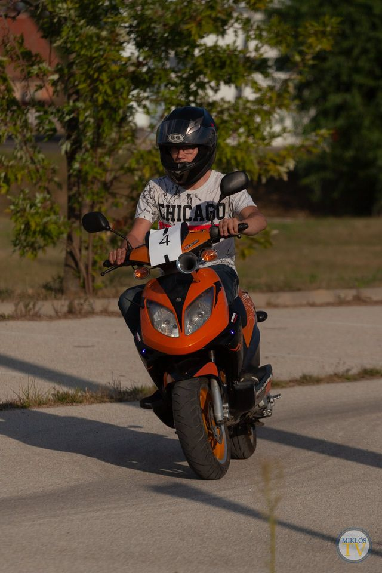

Nádas Bence Bertalan 2001.10.06-án (szombat) született Törökszentmiklóson. Óvódába a Hunyadi úti óvodába járt, már ott megismerte Bódi András barátját. fordult elő olyan, hogy együtt játszottak, stb. Iskolába a Hunyadi útiba járt. Ezt követően a Szolnoki ÉPFÁ-ban végezte el az asztalos szakot, és ott érettségizett. A cserkészetbe 2013-2014 körül került be. Nemsokára már az egyetlen megmaradó örsbe, a Király Kobra örsbe csatlakozott. Ott a 2 óvodás, Bandi és Bence ismét találkoztak. Jelenleg is a Király Kobra örs tagja Bódi András, Imre Zsolt, és Hajmann Viktorral egyetemben.
 |
|
Végzettség: |
szakmunkás asztalos, illetve sikeres érettségi |
Jogosítvány: |
AM és B kategóriás |